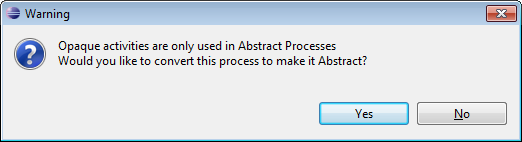

Opaque activities are only used in abstract processes, and are meant as placeholders for other activities or complex business logic that has not yet been determined. When you drag and drop an Opaque activity onto the drawing canvas, the process will be converted to a non-executable, abstract process. The BPEL Designer will inform you about this by displaying a warning dialog.

Opaque